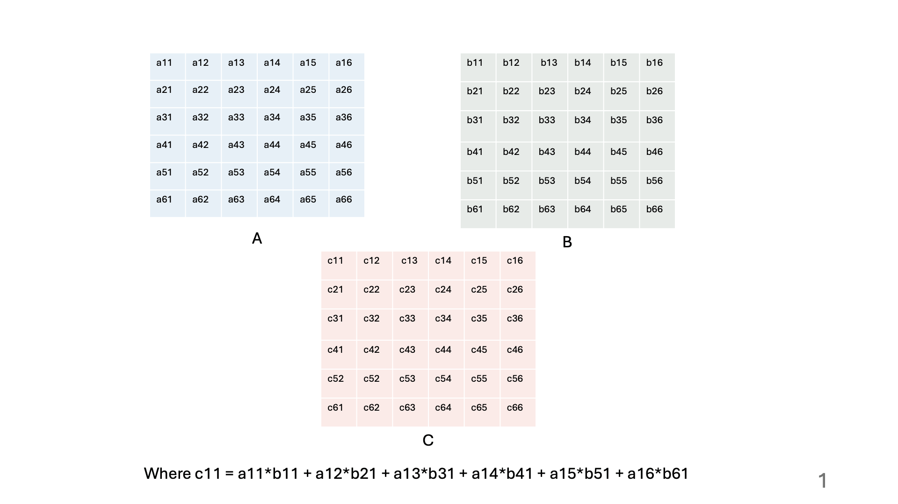

Matrix multiplication is one of the most performed operations in AI (deep learning, computer vision, machine learning, etc.). It is the ideal task for a GPU since GPU run on SPMD (Single Program Multiple Data) programming model, which means they run the same instruction for different data (we will soon see what is meant by this).
To compute multiplication of two matrices efficiently with GPUs, we write a kernel that slides a tile across the two matrices and keeps adding the sum of multiplication of values in those tiles. A tile is a block in GPU and the values in a tile are shared across the threads in the block (hence a thread in a block can access all the values in a tile).
Below is an animation of what the tiling process looks like:

The kernel we write spins off matrixWidth x matrixWidth threads, with each thread responsible for finding the value of one value in the final matrix.
Lets look at the kernel code for this.
MatrixMulCUDA<<<blocksPerGrid, threadsPerBlock>>>(C, A, B, matrixWidth);
This calls the GPU to execute the kernel MatrixMulCUDA with blocksPerGrid number of blocks per grid (here a grid represents our entire matrix, and hence the block represents the tiles. Therefore, the number of blocks would be matrixWidth/tileWidth) and threadsPerBlock number of threads per block (or threads per tile - which would be equivalent to number of cells in a tile). The definition of these can be seen below:
dim3 blocksPerGrid(matrixWidth / TILE_WIDTH, matrixWidth / TILE_WIDTH);
dim3 threadsPerBlock(TILE_WIDTH, TILE_WIDTH);Inside the kernel, we first calculate the row and column that a thread is dealing with for easier tile and temp values calculation later.
int row = blockIdx.y * blockDim.y + threadIdx.y;
int col = blockIdx.x * blockDim.x + threadIdx.x;For getting the row, we first shift by how much down our block (or our tile) is (by using its y coordinate - we shift it block width times) and then we shift further down below by how much the y coordinate of the thread inside our block is. For ex., from slide 6, the row of the block in B for b44 thread would be: 1(since block’s x,y coordinate are 1,1)x2(since block dim is 2,2) + 1 (since the threads coordinate inside the block is 1,1) = 3.
Similarly, for getting the column value, we shift right by how much right our block is(by taking its x coordinate and multiplying it with block width) and then shift right again by how much right our thread inside the block is (which is the x coordinate of the thread). For ex., from slide 6, the col of the block in B for b33 thread would be: 1(since block’s x,y coordinate are 1,1)x2(since block dim is 2,2) + 0 (since the threads coordinate inside the block is 0,0) = 2.
Then we allocate space for the shared tile (shared across the block of threads)
__shared__ float sharedA[TILE_WIDTH][TILE_WIDTH];
__shared__ float sharedB[TILE_WIDTH][TILE_WIDTH];And finally we come to the main part of our calculation:
// Iterate over tiles of input matrices
for (int tile = 0; tile < matrixWidth / TILE_WIDTH; tile++) {
// Load values into the shared memory
sharedA[threadIdx.y][threadIdx.x] = A[row * matrixWidth + (tile * TILE_WIDTH + threadIdx.x)];
sharedB[threadIdx.y][threadIdx.x] = B[(tile * TILE_WIDTH + threadIdx.y) * matrixWidth + col];
// Synchronize threads of a block
__syncthreads();
// Perform multiplication and accumulate results into thread-local memory
for (int k = 0; k < TILE_WIDTH; ++k) {
sum += sharedA[threadIdx.y][k] * sharedB[k][threadIdx.x];
}
// Synchronize threads of a block
__syncthreads();
}Let’s go through each part of the code one by one.
for (int tile = 0; tile < matrixWidth / TILE_WIDTH; tile++) {
The temp matrix is (iteratively) added up across all the time we slide the tile across matrixWidth (which is equal to matrixWidth/tileWidth) to calculate values for a tile in C (for ex., we slide the tile 3 times - in image 1,2,3 to get values for the first tile in C), so we get the loop bounds as tile = 0; tile < matrixWidth / TILE_WIDTH; tile++.
Also, from the animation, notice how in the temp matrix the row values come from A (for ex. from image 3: a23, a24 comes in temp[2,1] because we are in the second row of temp) but the column values come from B (b32, b42 when in 2nd column of temp otherwise b31, b41). Hence, while iterating the tiles, we shift row wise in A but column wise in B.
sharedA[threadIdx.y][threadIdx.x] = A[row * matrixWidth + (tile * TILE_WIDTH + threadIdx.x)];
sharedB[threadIdx.y][threadIdx.x] = B[(tile * TILE_WIDTH + threadIdx.y) * matrixWidth + col];
So, we fill out the shared block by focusing only on the value that the current thread will fill (since other threads in the block will fill up other values in the shared block/tile). Since there are as many threads in a block as there are values to be filled in the tile, we just fill it by the thread’s x and y coordinate.
Because of our explanation in the previous paragraph, we fill out the value in sharedA block by first shifting the position by row x matrixWidth location and then adding the x coordinate of the thread, and finally adding how much the tile shifting contributes to the location of the thread (which is tilenumber x tileWidth) which equates to A[row * matrixWidth + (tile * TILE_WIDTH + threadIdx.x)]. Similarly, for sharedB block, we iterate column wise, hence to get the location of the value from B, we shift down according to tilenum (tilenum x tileWidth)and the y coordinate of the thread inside the block/tile (by threadIdx.y) and finally shift right by actual col value to get B[(tile * TILE_WIDTH + threadIdx.y) * matrixWidth + col].
__syncthreads();
Then we sync across the threads in the block by using __syncthreads() to make sure that all the values in the shared tile have been populated by other threads in this block.
for (int k = 0; k < TILE_WIDTH; ++k)
sum += sharedA[threadIdx.y][k] * sharedB[k][threadIdx.x];
And finally we iterate across tileLength to sum up the multiplication by going across row wise in sharedA block (i.e. for sharedA block, x coordinate comes from thread’s y index and the y coordinate comes from position within the tile - the x and y coordinates for the block are kind of reversed because of how memory allocation works in C/C++ - the x coordinate actually tells how much far down to go if that makes sense - which is why we take sharedA[threadIdx.y][k]) and column wise in sharedB block (similarly here, the x coordinate comes from index in tile and the y comes from thread’s x coordinate to finally get sharedB[k][threadIdx.x]).
__syncthreads();
We sync across the threads in the block by using __syncthreads() before moving over to the next tile (out of matrixWidth/tileWidth) tiles.
C[row * matrixWidth + col] = sum;
Finally, we put this sum in C matrix at the row and col value location that we had calculated at the beginning (we first shift down by matrixWidth times row to reach the right memory location since C is stored as a 1d array in memory of matrixWidth x matrixWidth size) .
The associated code can be found at: https://github.com/richidubey/Tiled-Matrix-Multiplication.
Hope this explanation helped, thanks for being here! Don’t hesitate to reach out if you have any doubts about the post.